From scalars to PCA · Chapter 2 + reproducible Google Colab labs
2026-01-01
How does a computer turn numbers, images, and text into mathematical objects that an AI model can process?
By the end, learners will be able to:
shape, ndim, batches, and channels.45 min
2.1–2.4 · objects, products, inverse, span
35 min
2.5–2.7 · norms, special matrices, eigen
45 min
2.8–2.12 · SVD, pseudoinversa, traza, determinante, PCA
35 min
Colab · datasets + frameworks + CPU/GPU
+ 20 min distribuidos en questions, transitions, and a short break.
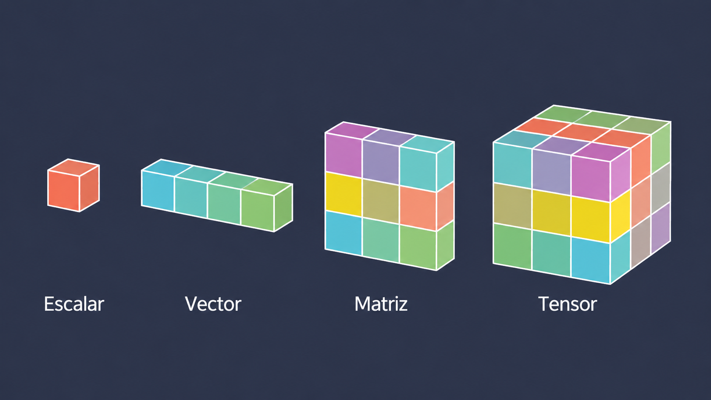
A scalar is the simplest form of data: a single numerical or symbolic value. It can represent a constant or a univariate variable.
In machine learning, we usually work with real-valued scalars:
\[ a \in \mathbb{R} \]
Represents a single value
It has no dimensions or direction
It can be real or complex
Although they seem simple, scalars are fundamental: many model hyperparameters, such as learning rate \(\lambda\), the number of epochs, or a threshold, are often expressed as scalar values.
A scalar = one value
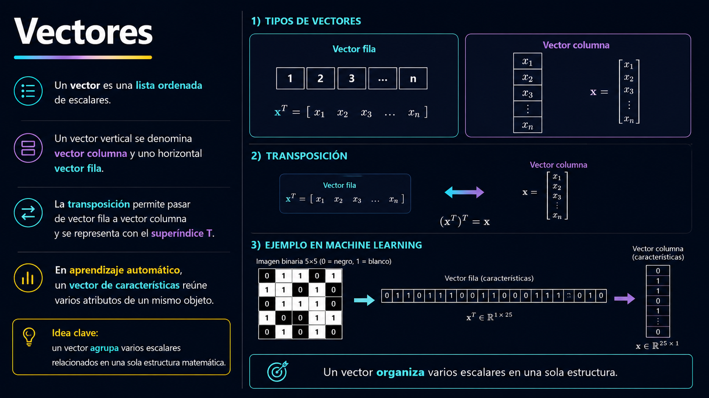
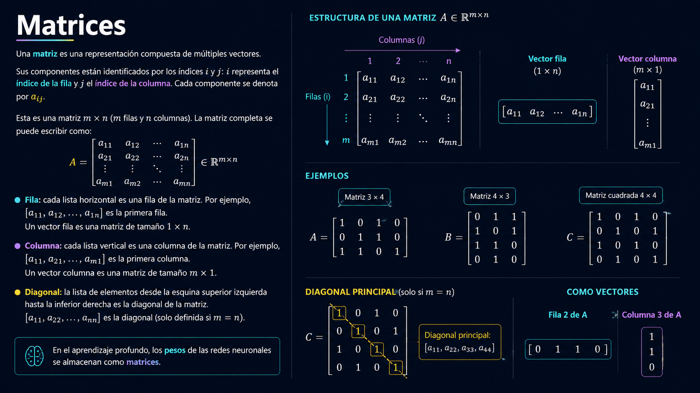
| Object | Simple explanation | Data example | Typical shape | Tensor dimension / rank |
|---|---|---|---|---|
| Escalar | one number | age | () |
Tensor 0D |
| Vector | ordered list | one person | (4,) |
Tensor 1D |
| Matrix | 2D table | 100 people × 4 variables | (100, 4) |
Tensor 2D |
| Tensor 3D | array with 3 axes | RGB image | (224, 224, 3) |
Tensor 3D |
| Tensor 4D | array with 4 axes | batch of RGB images | (32, 224, 224, 3) |
Tensor 4D |
| Tensor 5D | array with 5 axes | batch of videos | (8, 30, 224, 224, 3) |
Tensor 5D |
| Tensor 6D | array with 6 axes | batch of video sequences | (4, 10, 30, 224, 224, 3) |
Tensor 6D |
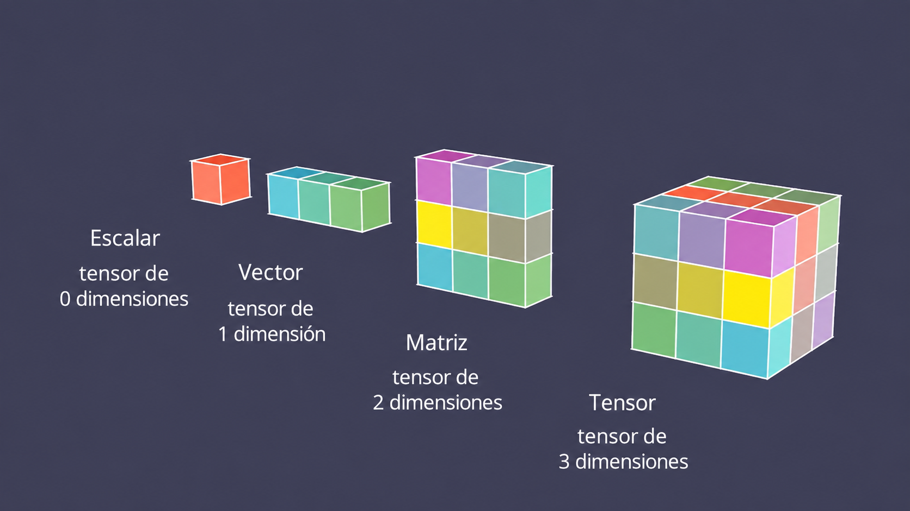
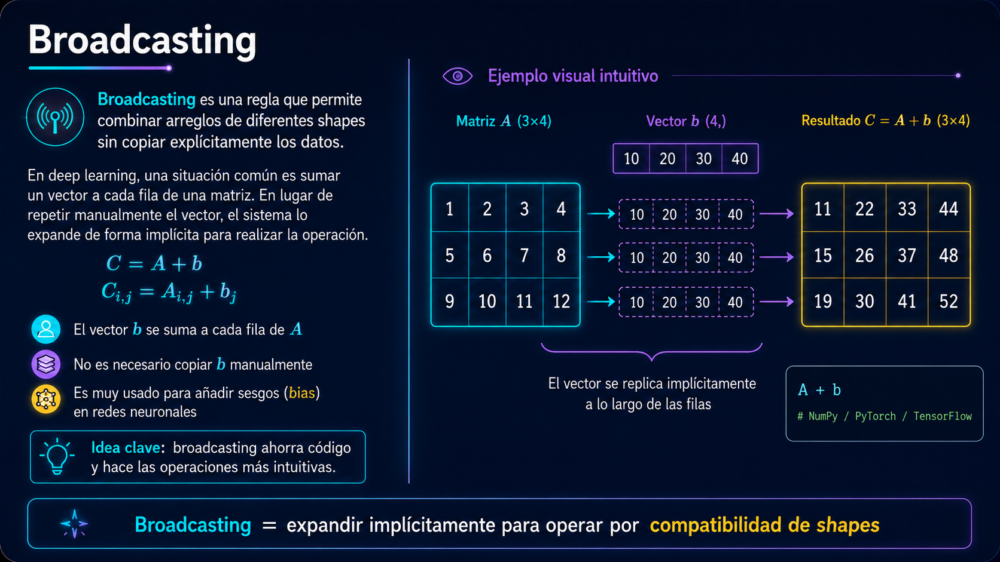
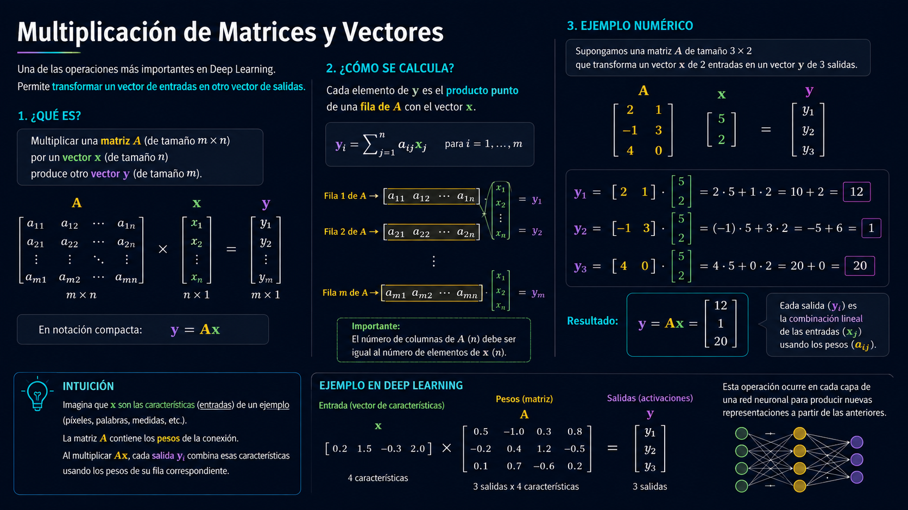
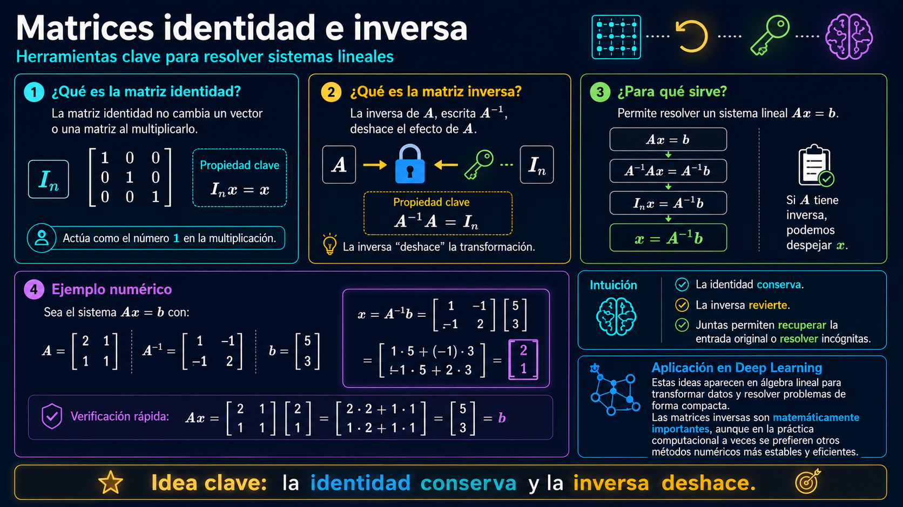
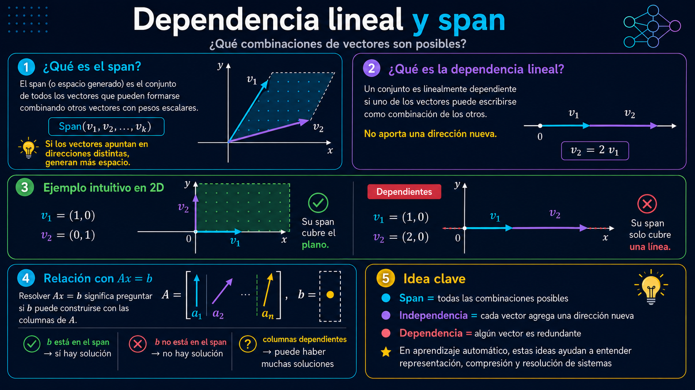
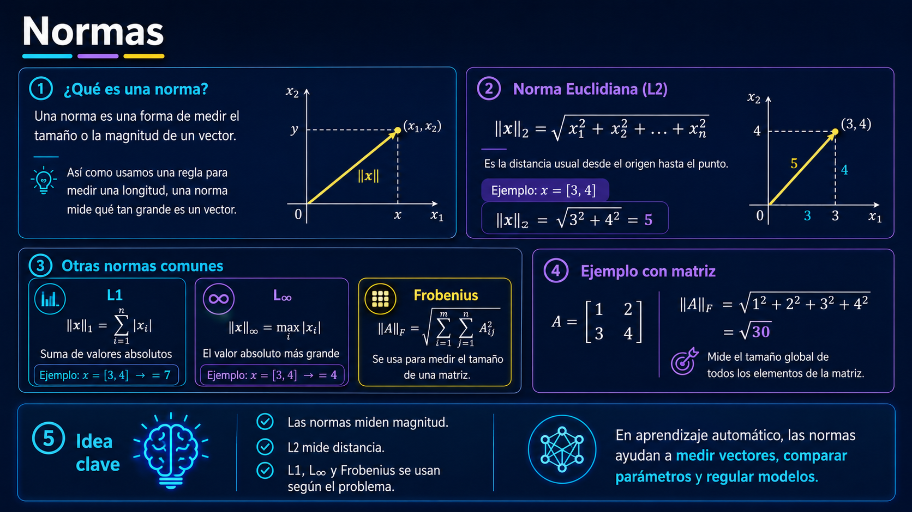
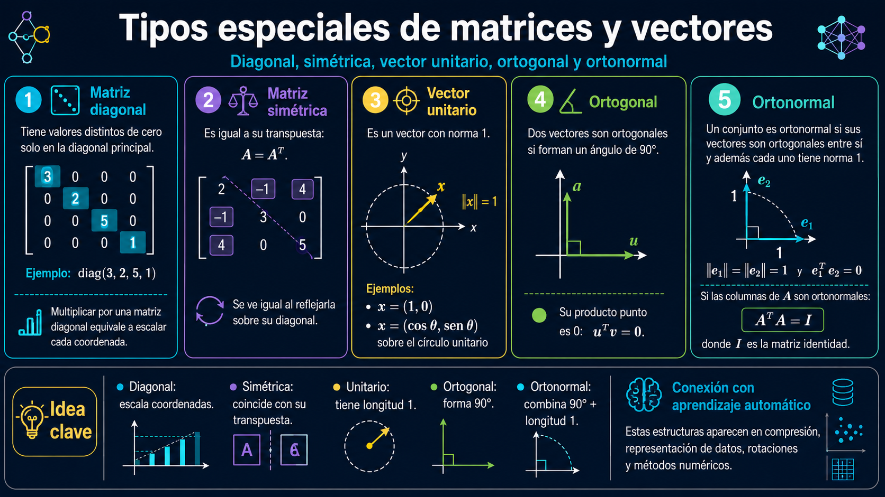
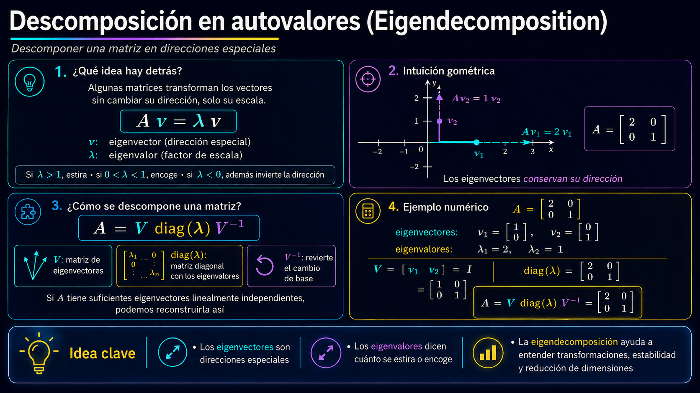
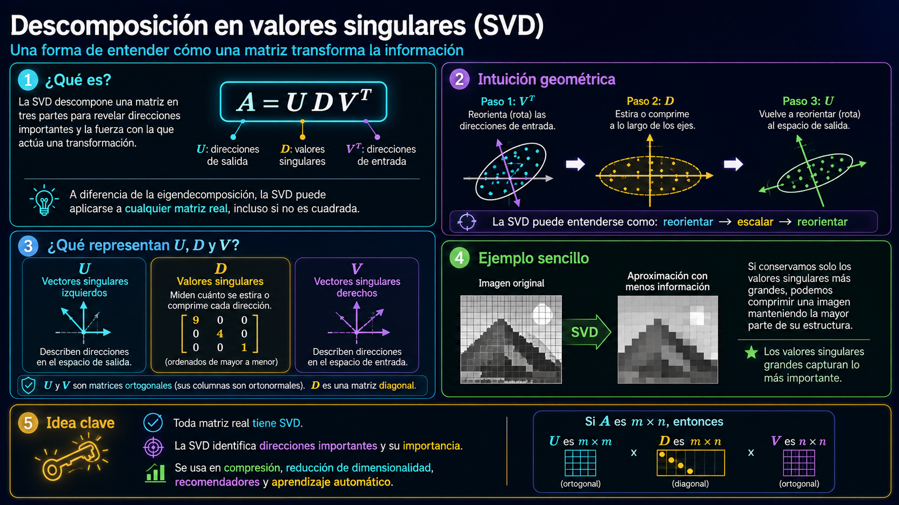
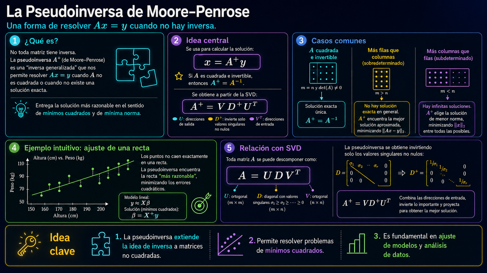
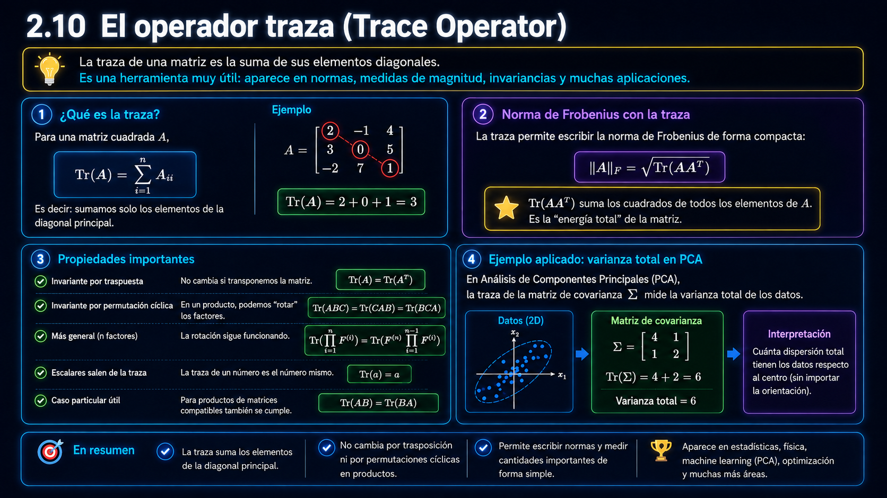
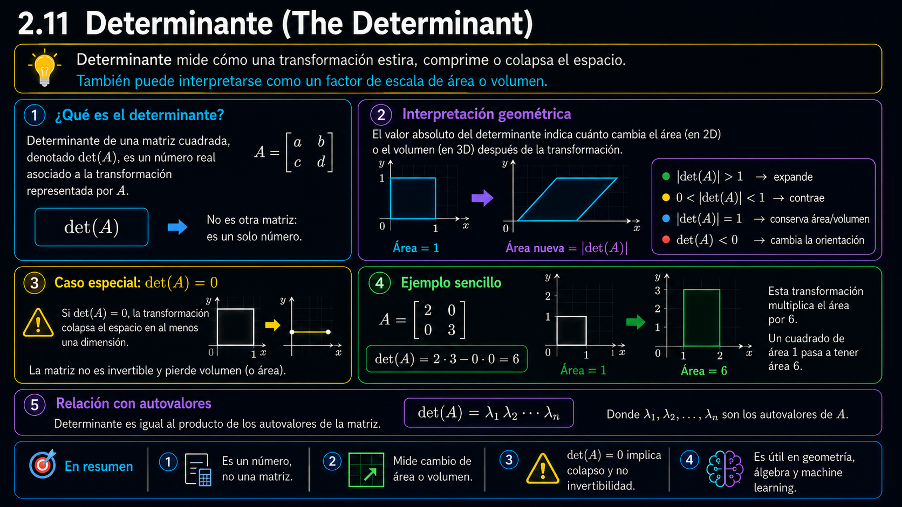
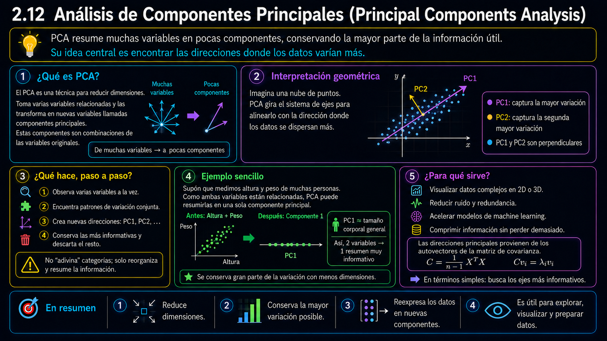
same operation
A @ B
│
┌─────────────┼─────────────┐
↓ ↓ ↓
NumPy TensorFlow PyTorch
CPU CPU / GPU CPU / GPUStructure prepared for GitHub Pages:
linear-algebra-deep-learning/
├── en/
│ ├── slides/
│ └── exercises/
├── es/
│ ├── slides/
│ └── exercises/
├── shared/
├── _quarto.yml
└── .github/workflows/publish.ymlExpected URL:
https://laverde97.github.io/linear-algebra-deep-learning/
Deep learning works with representations. Linear algebra gives us the language to describe, transform, measure, and compress them.
Linear Algebra for Deep Learning · Google Colab + Quarto